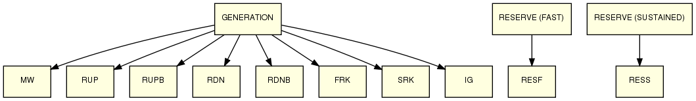
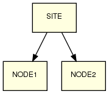
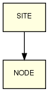
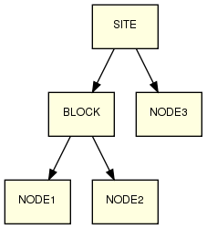

Flow descriptions and content is subject to change with the development of detailed design.
Definitions
| Symbol | Description |
|---|
| Dispatch sent |
| Dispatch resend |
| Dispatch unread |
| Dispatch read |
| Dispatch timer started |
| Dispatch timer stopped |
| Dispatch acknowledged affirmation |
| Dispatch queried |
| SEQ_NUM | Dispatch sequence number |
| ACK_SEQ_NUM | Dispatch automatic acknowledgement sequence number |
| ACKA_SEQ_NUM | Dispatch manual acknowledgement sequence number |
| ACKQ_SEQ_NUM | Dispatch acknowledgement query sequence number |
| RESEND | Dispatch instruction resend |
Dispatch products and dispatch type association
| Dispatch Product | Dispatch Type |
|---|
| GENERATION |
| MW | Generator loading dispatch value in MW | RUP | 5 minute ramping up rate in MW if constrained | RUPB | 5 minute ramping up rate in MW if broken | RDN | 5 minute ramping down rate in MW if constrained | RDNB | 5 minute ramping down rate in MW if broken | FRK | Fast reserve risk MW, only sent at the dispatch block node if Transpower has a block agreement and one of the child dispatch nodes is capable of exceeding the risk MW value. | SRK | Sustained reserve risk MW, only sent at the dispatch block node if Transpower has a block agreement and one of the child dispatch nodes is capable of exceeding the risk MW value. | IG | Indicates that this intermittent generator is constrained e.g. dispatched MW does not equal initial MW value sent to SPD solver. This instruction is only sent for intermitted generators and is always sent even if there has been no change in value. The dispatch value can be 0.0 (unconstrained) and 1.0 (Constrainted) and both values are sent as Setpoint controls. |
|
"RESERVE (FAST)" | RESF | Generator fast reserves in MW |
|
"RESERVE (SUSTAINED)" | RESS | Generator sustained reserves in MW |
|
| Voltage | |
| MVAR | MVAR | Generator vars in MVAR |
|
| INTF | INTF | Fast interruptible load in MW |
|
| INTS | INTS | Sustained interruptible load in MW |
|
| FREQ | | FREQ | Frequency keeper bandsize in MW | | FST | Effective start time for the frequency keeper instruction. |
|
Few examples

Multi node Web Service (SSE) dispatch
Participant Site has NODE1 and NODE2.

To avoid verbosity only MW, RUP and RDN dispatch types are shown here.
Transpower
Participant Site
00:00:00
Transpower sends dispatch data:
Participant Site gets dispatch data with new SEQ_NUM:
00:01:00
Transpower gets ACK_SEQ_NUM for both nodes and starts timer for each node
Participant Site sends ACK_SEQ_NUM for each node:
00:02:00
Transpower gets ACKA_SEQ_NUM for NODE1and stops timer for NODE1
Participant Site sends ACKA_SEQ_NUM for NODE1:
00:03:00
Transpower gets ACKA_SEQ_NUM for NODE2 and stops timer for NODE2
Participant Site sends ACKA_SEQ_NUM for NODE2:
00:05:00
Transpower sends dispatch data:
Participant Site gets dispatch data with new SEQ_NUM:
00:06:00
Transpower gets ACK_SEQ_NUM for NODE1 and starts timer for NODE1
Participant Site sends ACK_SEQ_NUM for NODE1:
00:07:00
Transpower gets change in ACK_SEQ_NUM for NODE2 and starts timer for NODE2
Participant Site sends ACK_SEQ_NUM for NODE2:
00:08:00
Transpower gets ACKA_SEQ_NUM for both nodes and stops timer for each node
Participant Site sends ACKA_SEQ_NUM for each node:
00:10:00
Transpower sends dispatch data:
Participant Site gets dispatch data with new SEQ_NUM:
00:11:00
Transpower gets ACK_SEQ_NUM for both nodes and starts timer for each node
Participant Site sends ACK_SEQ_NUM for each node:
00:12:00
Transpower gets ACKQ_SEQ_NUM for NODE1, initiates query resolution process and stops timer for NODE1
Participant Site sends ACKQ_SEQ_NUM for NODE1:
00:13:00
Transpower gets ACKA_SEQ_NUM for NODE2 and stops timer for NODE2
Participant Site sends ACKA_SEQ_NUM for NODE2:
Single node ICCP dispatch
Participant Site has single node 'NODE'

To avoid verbosity only MW, RUP and RDN dispatch types are shown here.
Transpower
Participant Site
00:00:00
Transpower sets dispatch data points:
Participant Site observes change in SEQ_NUM and reads dispatch data point values as:
00:01:00
Transpower observes change in Auto ACK_SEQ_NUM and starts timer:
Participant Site sets ACK_SEQ_NUM:
00:02:00
Transpower observes change ACKA_SEQ_NUM and stops timer:
Participant Site sets ACKA_SEQ_NUM:
00:05:00
Transpower sets dispatch data points:
Participant Site observes change in SEQ_NUM and reads dispatch data point values as:
00:06:00
Transpower observes change in ACK_SEQ_NUM and starts timer:
Participant Site sets ACK_SEQ_NUM:
00:07:00
Transpower observes change in ACKA_SEQ_NUM and stops timer:
Participant Site sets ACKA_SEQ_NUM:
00:10:00
Transpower sets dispatch data points:
Participant Site observes change in SEQ_NUM and reads dispatch data point values as:
00:11:00
Transpower observes change in Auto ACK_SEQ_NUM and starts timer:
Participant Site sets ACK_SEQ_NUM:
00:12:00
Transpower observes change in ACKQ_SEQ_NUM, it initiates query resolution process and stops timer:
Participant Site sets ACKQ_SEQ_NUM:
00:15:00
Transpower resends dispatch sequence number 3:
Participant Site observes change in SEQ_NUM and reads dispatch data point values as:
00:16:00
Transpower observes change in Auto ACK_SEQ_NUM and starts timer:
Participant Site sets ACK_SEQ_NUM:
00:17:00
Transpower observes change in ACKA_SEQ_NUM and stops timer:
Participant Site sets ACKA_SEQ_NUM:
00:20:00
Transpower sets dispatch data points:
Participant Site observes change in SEQ_NUM and reads dispatch data point values as:
00:21:00
Transpower observes change in Auto ACK_SEQ_NUM and starts timer:
Participant Site sets ACK_SEQ_NUM:
00:22:00
Transpower observes change in ACKA_SEQ_NUM and stops timer:
Participant Site sets ACKA_SEQ_NUM:
Multi node ICCP block dispatch
Participant Site has BLOCK (with NODE1 and NODE2) and NODE3
- Starting timer on BLOCK implicitly starts timer on NODE1 and NODE2
- Stopping timer on BLOCK implicitly stops timer on NODE1 and NODE2

To avoid verbosity only MW is shown here.
Transpower
Participant Site
00:00:00
Transpower sets dispatch data points:
Participant Site observes change in SEQ_NUM and reads dispatch data point values as:
00:01:00
Transpower observes change in ACK_SEQ_NUM for BLOCK and NODE3, starts timer for every node
Participant Site sets ACK_SEQ_NUM for BLOCK and NODE3:
00:02:00
Transpower observes change in ACKA_SEQ_NUM for BLOCK and stops timer for BLOCK
Participant Site sets ACKA_SEQ_NUM for BLOCK:
00:03:00
Transpower observes change in ACKA_SEQ_NUM for NODE3 and stops timer for NODE3
Participant Site sets ACKA_SEQ_NUM for NODE3:
00:05:00
Transpower sets dispatch data points:
Participant Site observes change in SEQ_NUM and reads data point values as:
00:06:00
Transpower observes change in ACK_SEQ_NUM for BLOCK and starts timer for BLOCK
Participant Site sets ACK_SEQ_NUM for BLOCK:
00:07:00
Transpower observes change in ACK_SEQ_NUM for NODE3 and starts timer for NODE3
Participant Site sets ACK_SEQ_NUM for NODE3:
00:08:00
Transpower observes change in ACKA_SEQ_NUM for both BLOCK and NODE3, stops timer for each node
Participant Site sets ACKA_SEQ_NUM for each node:
00:10:00
Transpower sets dispatch data points:
Participant Site observes change in SEQ_NUM and reads data point values as:
00:11:00
Transpower observes change in ACK_SEQ_NUM for both nodes and starts timer for each node
Participant Site sets ACK_SEQ_NUM for BLOCK and NODE3:
00:12:00
Transpower observes change in ACKQ_SEQ_NUM for BLOCK, initiates query resolution process and stops timer for BLOCK
Participant Site sets ACKQ_SEQ_NUM for BLOCK:
00:13:00
Transpower observes change in ACKQ_SEQ_NUM for NODE3, initiates query resolution process and stops timer for NODE3
Participant Site sets ACKQ_SEQ_NUM for NODE3:
00:15:00
Transpower sets dispatch data points:
Participant Site observes change in SEQ_NUM and reads data point values as:
00:16:00
Transpower observes change in ACK_SEQ_NUM for both nodes and starts timer for each node
Participant Site sets ACK_SEQ_NUM for each node:
00:17:00
Transpower observes change in ACKQ_SEQ_NUM for NODE1, initiates query resolution process and stops timer for NODE1
Participant Site sets ACKQ_SEQ_NUM for NODE1:
00:18:00
Transpower observes change in ACKA_SEQ_NUM for NODE3 and stops timer for NODE3
Participant Site sets ACKA_SEQ_NUM for NODE3:
00:19:00
Transpower observes change in ACKA_SEQ_NUM for NODE2 and stops timer for NODE2
Participant Site sets ACKA_SEQ_NUM for NODE2: